Aprenda a criar uma rotina noturna mais leve para seu filho, com atividades, brincadeiras e materiais educativos que tornam o momento antes de dormir mais tranquilo.
QUERO CONHECER O CURSOAcesso digital imediato — sem promessas de resultado, só uma rotina mais gentil.
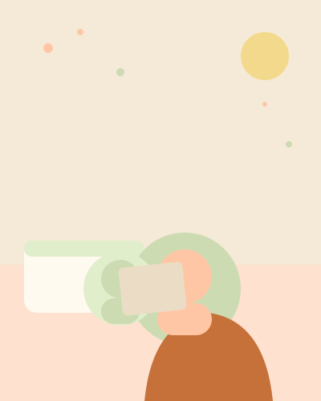
Muitas famílias vivem isso todas as noites — e não é sobre fazer errado, é sobre não ter as ferramentas certas ainda.
Seu filho pede celular ou tablet para conseguir relaxar antes de dormir.
É difícil fazer a criança desacelerar depois de um dia agitado.
A rotina da noite virou algo desorganizado e imprevisível.
Faltam ideias de atividades para substituir a tela nesse momento.
Você já tentou de tudo e parece que nada realmente ajuda a acalmar.
Um passo a passo simples para organizar o período antes de dormir.
De forma gradual, sem cortes bruscos nem confronto.
Pequenos rituais que aproximam pais e filhos antes de dormir.
Opções pensadas para diferentes idades e temperamentos.
Consistência que ajuda a criança a se sentir segura.
Luz, som e espaço para desacelerar antes de dormir.
Materiais em PDF, prontos para imprimir, pensados para tornar a noite mais leve e divertida.
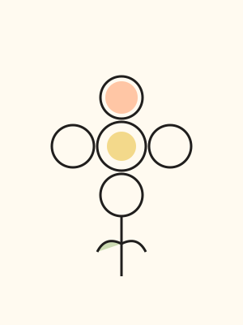
Desenhos para colorir
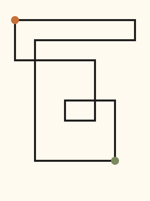
Labirintos simples
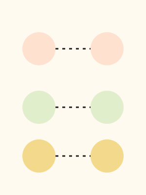
Associação de imagens
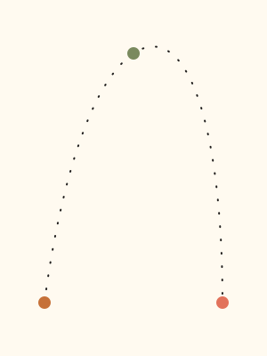
Atividades de coordenação
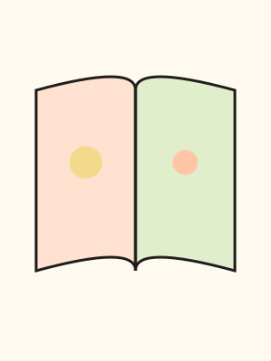
Histórias curtas
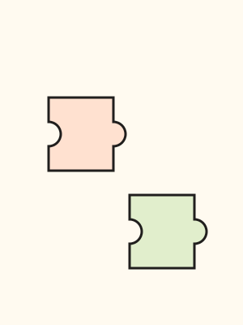
Jogos educativos
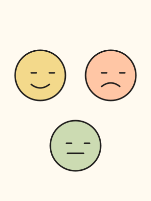
Atividades de emoções
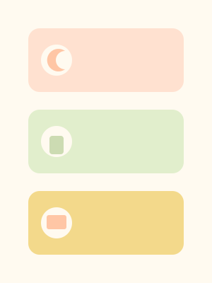
Cartões de rotina
Sugestões prontas, organizadas por faixa etária, para nunca faltar ideia na hora de desligar as telas.
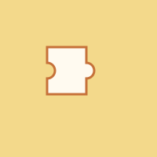
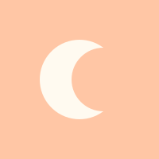
Você acessa o curso
Aprende a organizar a rotina
Escolhe as atividades
Coloca a nova rotina em prática
Acompanha a evolução da família
Quer diminuir o uso de telas antes de dormir
Procura atividades para fazer com seu filho
Quer uma rotina noturna mais organizada
Quer transformar a noite em um momento de conexão
Precisa de atividades prontas para imprimir
✓ Curso completo
✓ Atividades para imprimir
✓ Desenhos para colorir
✓ Jogos educativos
✓ Checklists
✓ Bônus: 50 atividades especiais
O material foi pensado para famílias com crianças pequenas, com atividades adaptáveis a diferentes idades.
Sim, o acesso é 100% digital, direto pelo computador, tablet ou celular.
A impressão é recomendada, mas as atividades também podem ser usadas na tela de um tablet ou computador.
Sim, a maioria dos materiais é em PDF para imprimir e usar fisicamente, sem depender de tela nenhuma.
Sim, embora pensadas para a rotina noturna, várias atividades funcionam bem em qualquer horário.
O prazo de acesso será detalhado na página de compra.
Após a compra, você recebe acesso imediato à área do curso e a todos os PDFs para download.
Não. O curso é um guia de rotina e atividades, e não substitui acompanhamento médico ou de outro profissional de saúde.
Transforme a rotina antes de dormir em um momento de presença, criatividade e conexão.
QUERO CONHECER O CURSO